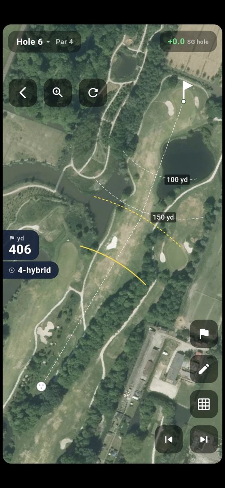
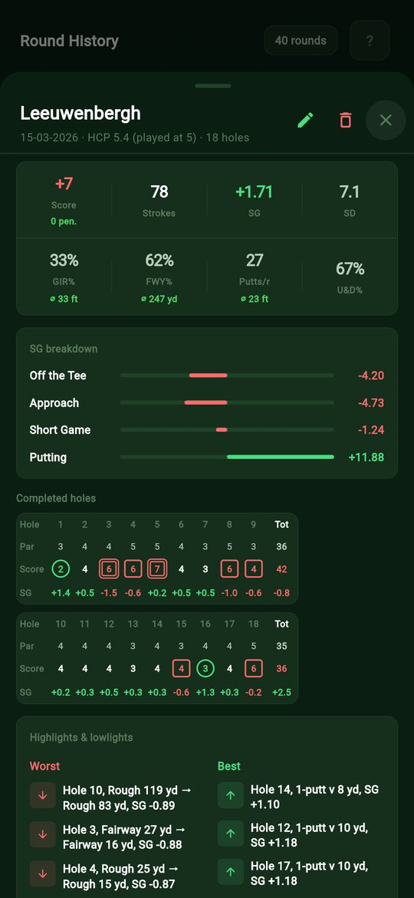
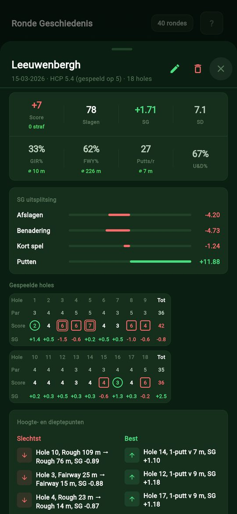
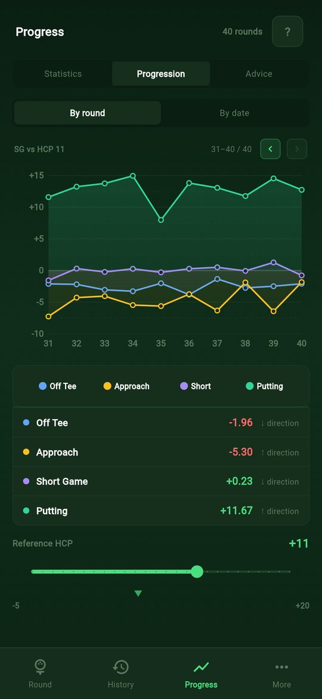
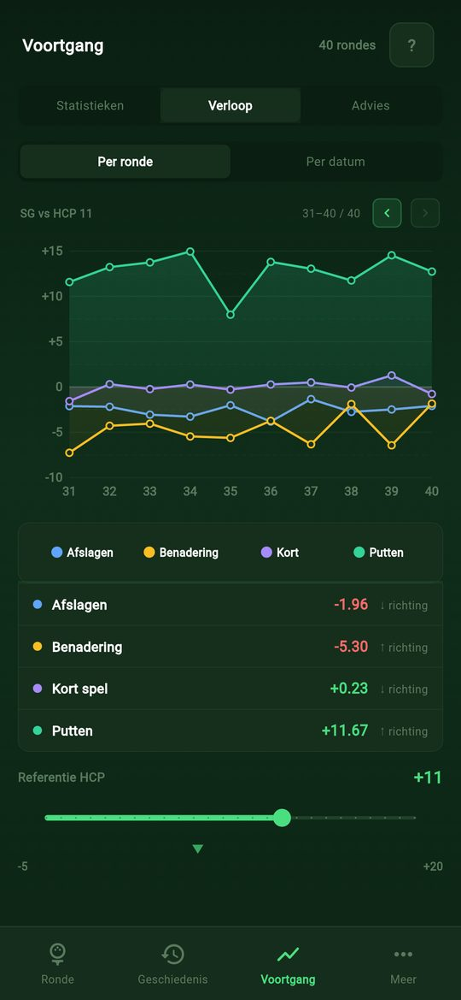
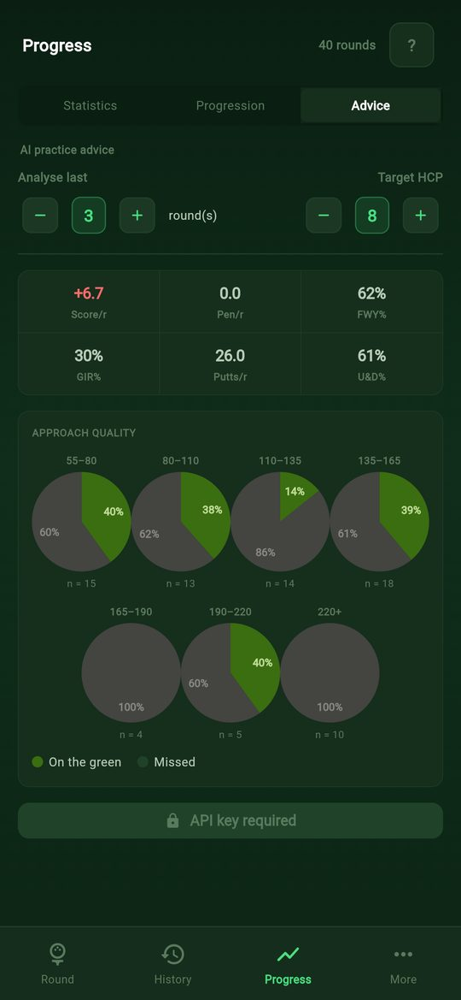
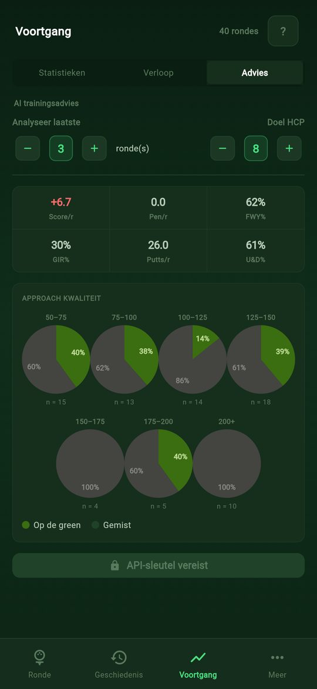
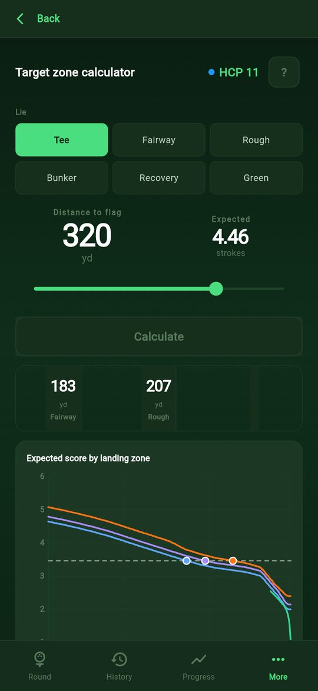
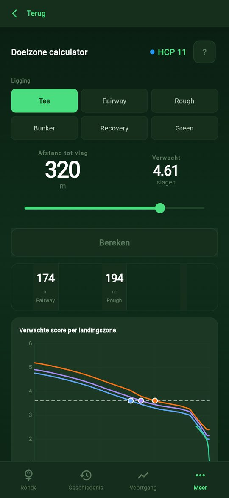

Strokes Gained. Strokes Gained.
Track your round shot by shot and see exactly where you gain and lose strokes, off the tee, on approach, around the green and on the putting surface. Based on Broadie's Strokes Gained model, tuned to your handicap. Houd je ronde slag voor slag bij en zie precies waar je slagen wint en verliest: vanaf de tee, op de approach, rond de green en met putten. Gebaseerd op het Strokes Gained-model van Broadie, afgestemd op jouw handicap.

What's insideWat zit erin
Everything you need.
Nothing you don't.
Alles wat je nodig hebt.
Niets wat je niet nodig hebt.
The statistics tour pros use, made simple enough to log on the course. De statistieken die tourspelers gebruiken, simpel genoeg om op de baan bij te houden.
Target-zone calculatorDoelzone-calculator
Pick your lie and distance and see your expected strokes and which zone to aim for.Kies je ligging en afstand en zie je verwachte aantal slagen en op welke zone je moet mikken.
GPS round trackerGPS-rondetracker
Log every shot hole by hole. GPS measures distances so entering a shot only takes a tap.Leg elke slag per hole vast. GPS meet de afstanden, dus een slag invoeren is één tik.
Bird's-eye viewBirdseye view
See the hole from above with your shots plotted, full screen if you like.Bekijk de hole van bovenaf met je slagen erop, desgewenst schermvullend.
Four SG categoriesVier SG-categorieën
Tee, approach, short game and putting, each compared with players of your handicap.Tee, approach, korte spel en putten, elk vergeleken met spelers van jouw handicap.
Progress over timeVoortgang door de tijd
Charts and stats across all your rounds show what's improving and what isn't.Grafieken en statistieken over al je rondes laten zien wat beter gaat en wat niet.
Club distancesClubafstanden
Tag your clubs and get trimmed average and longest distances per club.Tag je clubs en krijg per club een gecorrigeerde gemiddelde en langste afstand.
Course handicapBaanhandicap
Look up your playing handicap for courses in the Netherlands and Scotland.Zoek je baanhandicap op voor banen in Nederland en Schotland.
AI practice adviceAI-trainingsadvies
Optional: get prioritised practice tips based on your numbers, using your own Claude API key.Optioneel: krijg trainingstips op volgorde van prioriteit op basis van je cijfers, met je eigen Claude API-sleutel.
Optional cloud backupOptionele cloudback-up
Rounds are backed up automatically. Sign in with Google to get them back on a new device.Rondes worden automatisch geback-upt. Log in met Google om ze terug te krijgen op een nieuw toestel.
See it in actionZie het in actie
Real screens, real rounds.Echte schermen, echte rondes.
Screenshots from the app with 40 demo rounds loaded. Schermafbeeldingen uit de app met 40 demorondes geladen.








Simple by designSimpel ontworpen
Play in 3 steps.Spelen in 3 stappen.
Pick your courseKies je baan
Choose a course and tee, set your handicap and start a full or shorter round.Kies een baan en tee, stel je handicap in en start een volledige of kortere ronde.
Log each shotLeg elke slag vast
Tap where your ball lies. GPS fills in the distance; add a club if you want.Tik aan waar je bal ligt. GPS vult de afstand in; voeg desgewenst een club toe.
See what to practiseZie wat je moet trainen
Your round summary shows strokes gained per category plus your best and worst shots of the day.Je rondeoverzicht toont strokes gained per categorie plus je beste en slechtste slagen van de dag.
Who it's forVoor wie
Built for every golfer.Gemaakt voor elke golfer.
BeginnersBeginners
Find out early which part of your game costs the most strokes, and start there.Ontdek vroeg welk deel van je spel de meeste slagen kost, en begin daar.
Club golfersClubgolfers
Stop guessing. See if it's really your putting, or those approach shots from 120 metres.Stop met gokken. Zie of het echt je putten is, of die approach van 120 meter.
Low handicappersLage handicappers
Fine-tune with GIR by distance band, club distances and up-and-down percentages.Verfijn met GIR per afstandsband, clubafstanden en up-and-down-percentages.
Got questions?Vragen?
Frequently asked questions.Veelgestelde vragen.
What is Strokes Gained?Wat is Strokes Gained?
A way to measure each shot against how many strokes a player of your level would normally need from that spot. Gain strokes and your number goes up; lose them and it goes down. It's the method Mark Broadie developed and the PGA Tour uses.Een manier om elke slag te vergelijken met hoeveel slagen een speler van jouw niveau normaal nodig heeft vanaf die plek. Win je slagen, dan gaat je getal omhoog; verlies je ze, dan omlaag. Het is de methode die Mark Broadie ontwikkelde en die de PGA Tour gebruikt.
Is it free?Is het gratis?
Yes. The optional AI advice uses your own Claude API key, which Anthropic bills you for directly.Ja. Het optionele AI-advies gebruikt je eigen Claude API-sleutel; die rekent Anthropic rechtstreeks met je af.
Do I need an account?Heb ik een account nodig?
No. The app backs up your rounds under an anonymous ID automatically. Signing in with Google links that backup to your Google account, so you can restore it on another device.Nee. De app maakt automatisch een back-up van je rondes onder een anonieme ID. Inloggen met Google koppelt die back-up aan je Google-account, zodat je hem op een ander toestel terugkrijgt.
How do I install the APK?Hoe installeer ik de APK?
Open the download on your Android phone and tap the file. Android asks once to allow installs from your browser; allow it and tap Install. To update, download the new APK and install it over the old one; your rounds are kept.Open de download op je Android-telefoon en tik op het bestand. Android vraagt één keer of je installaties vanuit je browser toestaat; sta dat toe en tik op Installeren. Voor een update download je de nieuwe APK en installeer je die over de oude heen; je rondes blijven bewaard.
Can I use it on iPhone?Werkt het op iPhone?
Yes, in Safari. Add it to your home screen (Share → Add to Home Screen) and sign in, so your rounds are kept when Safari closes.Ja, in Safari. Zet het op je beginscherm (Delen → Zet op beginscherm) en log in, zodat je rondes bewaard blijven als Safari sluit.
Metres or yards?Meters of yards?
Both. Switch to yards and feet in the settings.Allebei. Schakel in de instellingen over naar yards en feet.
What happens to my location?Wat gebeurt er met mijn locatie?
GPS is used on your device to measure shot distances. Your coordinates are not stored in your rounds or sent to us. See the privacy policy for details.GPS wordt op je toestel gebruikt om slagafstanden te meten. Je coördinaten worden niet in je rondes opgeslagen en niet naar ons gestuurd. Zie het privacybeleid voor details.